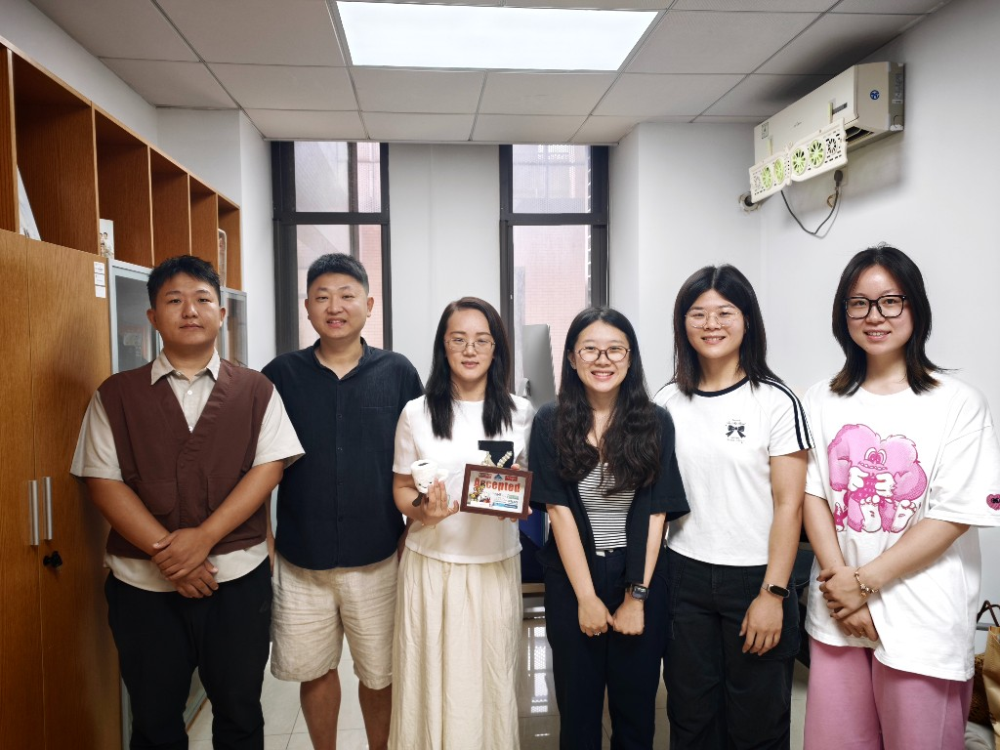

MEH Lab
微生物组学与生态系统健康
欢迎来到华东师范大学生态与环境科学学院微生物组学与生态系统健康课题组（MEH Lab）。
研究方向
-
微生物与砷的相互作用机制
砷胁迫环境中微生物多样性及功能适应性特征；微生物驱动的砷生物地球化学循环过程，以及砷与其他元素，如碳、氮等的耦合过程。
-
微生物响应城市化进程的生态学机制及其环境健康风险
城市化进程中，生态系统不同环境介质（水、土、气、叶）中微生物多样性及功能适应性特征；基于微生物组学技术、机器学习模型等解析及预测新型污染物ARGs和潜在病原微生物的环境健康风险。
-
建立并优化环境微生物组的高通量识别及功能解析方法
构建基于高通量测序短序列精准识别功能基因，如抗生素抗性基因、砷代谢基因的ROCker模型；建立基于宏组学数据长序列的共存功能基因解析方法。
教育经历
- 2010.09 – 2015.07 中国科学院生态环境研究中心，环境科学，理学博士，导师：朱永官院士
- 2006.09 – 2010.07 南京农业大学，农业资源与环境，农学学士
工作经历
- 2020.11 – 至今 华东师范大学，教授（紫江青年）
- 2017.08 – 2020.10 美国佐治亚理工学院，博士后
- 2015.07 – 2017.07 北京师范大学，博士后
荣誉及奖励
- 2021 中国生态学学会青年人才托举工程（2021–2023 年）
- 2022 上海市领军人才（青年）
- 2024 第九届中国土壤学会优秀青年学者奖
社会兼职
- Environmental Microbiology、Applied Microbiology and Biotechnology 等期刊审稿人
- 中国土壤学会青年工作委员会 创新委员
- 中国土壤学会土壤生物和生化专业委员会 青年委员